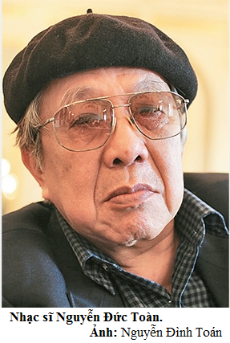

Tiết 22: nhạc sĩ Nguyễn Đức Toàn và bài hát Biết ơn Võ Thị Sáu
Tác giả: Nguyễn Đức Toàn
Nguyễn Đức Toàn (1929 – 2016), là một Nghệ sĩ Ưu tú, nhạc sĩ và họa sĩ của Việt Nam. Ông là một cựu sĩ quan quân đội với quân hàm Đại tá Quân đội Nhân dân Việt Nam và từng được Nhà nước Việt Nam trao tặng Huân chương Độc lập hạng Ba cho những đóng góp của mình.
Ông sinh ngày 10 tháng 3 năm 1929 tại Hà Nội. Thân sinh ông là nhà điêu khắc, các anh chị em ông hầu hết đều làm công tác âm nhạc.
Năm 1944, ông học vẽ tại trường Cao đẳng Mỹ thuật Đông Dương. Và lúc đầu đối với ông, hội họa là niềm say mê chính.
Tháng 8 năm 1945, ông tham gia cướp chính quyền ở Hà Nội và đã viết bài hát đầu tiên Ca ngợi đời sống mới.
Năm 1946, ông tham gia Đoàn Kịch Sao Vàng cùng nhạc sĩ Đỗ Nhuận, và tham gia kháng chiến chống Pháp.
Trong những năm 1968 – 1970, ông tu nghiệp ở Nhạc viện Kiev (Ukraina)
Sau khi Việt Nam thống nhất, ông viết những bài hát nhạc nhẹ trữ tình như Từ ngày hôm nay, Tình em biển cả, Chiều trên bến cảng, Hà Nội một trái tim hồng
Năm 2000, ông được trao tặng Giải thưởng Hồ Chí Minh về Văn học – Nghệ thuật cho các tác phẩm: Quê em, Biết ơn chị Võ Thị Sáu, Đào công sự, Nguyễn Viết Xuân cả nước yêu thương, Tình em biển cả, Chiều trên bến cảng.
Ông qua đời vào sáng ngày 7 tháng 10 năm 2016 (87 tuổi) tại Hà Nội
Tác phẩm: Biết ơn chị Võ Thị Sáu

Võ Thị Sáu (1933-1952) là một nữ du kích trong kháng chiến chống Pháp ở Việt Nam, người nhiều lần thực hiện các cuộc mưu sát nhắm vào các sĩ quan Pháp và những người Việt cộng tác đắc lực với chính quyền thực dân Pháp tại miền Nam Việt Nam.
Do bị chỉ điểm, cô bị quân Pháp bắt được và bị tòa án binh Quân đội Pháp xử tử hình khi chưa đến 18 tuổi.
Chính quyền Việt Nam xem cô như một biểu tượng liệt nữ anh hùng tiêu biểu trong cuộc Kháng chiến chống Pháp và đã truy tặng cho cô danh hiệu Anh hùng lực lượng vũ trang nhân dân năm 1993.
Cha: Võ Văn Hợi; mẹ: Nguyễn Thị Đậu
Quê quán: huyện Đất Đỏ, Bà Rịa - Vũng Tàu
Năm 1946, cô theo anh trai là Võ Văn Me vào khu kháng chiến, và trở thành liên lạc viên của Đội Công an xung phong Đất Đỏ. Năm 1947, cô chính thức trở thành đội viên Công an xung phong Đất Đỏ khi mới 14 tuổi.
Tháng 4 năm 1950, tòa án binh của quân đội Pháp đã đưa cô ra xét xử với tội danh làm chết một sĩ quan Pháp và 23 người Việt cộng tác với Pháp.
Câu nói nổi tiếng:
"Yêu nước chống bọn thực dân xâm lược không phải là tội".
"Ta còn mấy thùng rác ở khám Chí Hòa, tụi bây vô mà tịch thu!"
Bấm vào tên bài hát để nghe tác phẩm
Bài hát Biết ơn Võ Thị Sáu